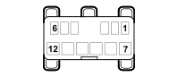

H090C SWITCH CONTROL PANEL (OPTIONAL DASHBOARD)
- Path
- Electrical equipment > 3 CONNECTORS > H MANUAL ELECTRIC CONTROLS > H090 SWITCH CONTROL PANEL > H090C SWITCH CONTROL PANEL (OPTIONAL DASHBOARD)
- Kind
- connector pinout (pin -> wire colour -> other end)
- Applies to
- all engines; all production periods; only with equipment: Chassis cab
- Interactive page
- https://sloeber94.github.io/elrnDB-fDct/en/#/244003085
Applies to: all engines; all production periods; only with equipment: Chassis cab

Wiring | Colour |
|---|---|
NERO (black) |
Pin | Cable | Destination | |||
|---|---|---|---|---|---|
Sec.. | Colour | Node | Connect. | Pin | |
1 | 0,5 | SB (pink with white stripe) | 8 | ||
2 | 0,75 | RV (red with green stripe) | 1 | ||
4 | 0,5 | MZ (brown with violet stripe) | See D160A DASHBOARD/OPTIONAL DASHBOARD COUPLING (OPTIONAL DASHBOARD) | 14 | |
5 | 0,5 | HG (grey with yellow stripe) | 2 | ||
6 | 0,5 | HN (grey with black stripe) | B09 | ||
7 | 1 | AN (light blue with black stripe) | B04 | ||
9 | 0.5 | SN (pink with black stripe) | 2 | ||
10 | 0.5 | S (pink) | 4 | ||
11 | 0,35 | MN (brown with black stripe) | See B101B OPTIONAL JUNCTION UNIT UNDER THE DASHBOARD (OPTIONAL DASHBOARD) | 44 | |
12 | 0,35 | GN (yellow with black stripe) | 1 | ||
Topics linked from this page (7)
- 19 OPTIONAL DASHBOARD
- B101B OPTIONAL JUNCTION UNIT UNDER THE DASHBOARD (OPTIONAL DASHBOARD)
- D018A ADDITIONAL FRONT/DASHBOARD COUPLING (FRONT)
- D097E SHORT CIRCUITING COUPLING (OPTIONAL DASHBOARD)
- D097L SHORT CIRCUITING COUPLING (OPTIONAL DASHBOARD)
- D160A DASHBOARD/OPTIONAL DASHBOARD COUPLING (OPTIONAL DASHBOARD)
- D174A OPTIONAL DASHBOARD/PASSENGER COURTESY LIGHT COUPLING (PASSENGER AREA FRONT COURTESY LIGHT BRIDGE)